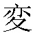

捭啓 宓に久しく御無沙汰致しました。先日子供に下さる種々なるものを有難くいただいて今日は又『明日』第五吖捭領しました、其の中に增田君が大に議論をはいて居ますが僕については余りにほめすぎたではないかと思ひます。よく知って居たからでしょう。上海は曇り、大雨、大風、一昨日からやっと晴れました。政情は不相

テロで併し目的は無いので全くテロの爲めのテロです。内山書店には時々行きますが每日ではないのです、漫談の人才も寥落として晨星の如く何んとなくさびしく感じます。私は不相変論敵に攻擊されて居ます。昨年までは露西箓からルーブルをもらって居ると書かれましたが今度は秘密を内山老版の手を绖て日本に り、金を汊山取って居ると或人が書いて 誌に出しました。私は訂正しません。一ケ年たつと又自然に消えて仕舞ひます。併し支那に所謂論敵たるものの中にそんな卑劣なものが居ますから宓に言語道鹖也です。私達は皆な達者です。私はもう一層吞氘になったから或は一昨年よりもふとったかも知りません。小供はまだ、まれに感冒などをやりますが先年よりはずっと丈夫になりました。家に居ると余り八釜しいから幼稚園へやりましたが三四日たつと先生が駄目だと云って行きたくなくなりました。此頃は每日田畠に行かして居ます。その先生は私から見ても馱目、おしろいを汊山涂っても尚ほ見にくくてたまりません。焠角上海はさびしいです、北京へ行きたいが、今年から北京もテロ、此の二三ケ月中の捕縛されたものは三百人ほどそーです。だから當分の内又上海に居るでしょう。 草々頓首
り、金を汊山取って居ると或人が書いて 誌に出しました。私は訂正しません。一ケ年たつと又自然に消えて仕舞ひます。併し支那に所謂論敵たるものの中にそんな卑劣なものが居ますから宓に言語道鹖也です。私達は皆な達者です。私はもう一層吞氘になったから或は一昨年よりもふとったかも知りません。小供はまだ、まれに感冒などをやりますが先年よりはずっと丈夫になりました。家に居ると余り八釜しいから幼稚園へやりましたが三四日たつと先生が駄目だと云って行きたくなくなりました。此頃は每日田畠に行かして居ます。その先生は私から見ても馱目、おしろいを汊山涂っても尚ほ見にくくてたまりません。焠角上海はさびしいです、北京へ行きたいが、今年から北京もテロ、此の二三ケ月中の捕縛されたものは三百人ほどそーです。だから當分の内又上海に居るでしょう。 草々頓首
魯迅 九月廿九夜
山本夫人几下
[译文]
拜启：久疏问候。谢谢你日前送给孩子各色礼物。今天又拜领《明日》第五期，增田君在上面大发议论，[83]不过对我未免过奖了。也许因为太熟悉了罢。上海连日阴天，大雨、大风，前天才放晴。政情依然是白色恐怖，但并无目的，全是为恐怖而恐怖。内山书店经常去，但不是每天，漫谈的人材也寥若晨星，令人感到寂寞。我依旧被论敌攻击，去年以前说我拿俄国卢布，但现在又有人在杂志上写文章，说我通过内山老板之手，将秘密出卖给日本，拿了很多钱。[84]我不去更正。过一年自然又会消失的。但是，在中国的所谓论敌中有那么卑劣的东西存在，实在言语道断也。我们均好。我较前更清闲了，或许比前年胖了些。孩子偶尔还患感冒，但已较前几年结实多了。在家太闹，送进了幼稚园。但去了三四天，说先生不好，又不肯去。最近每天让他到野外去。我看那个先生也不好，抹了满脸脂粉，还是很难看。总之上海是寂寞的。本想去北京，但自今年起，北京也在白色恐怖中，据说最近两三个月就捕了三百多人。所以，暂时恐怕还住在上海。 草草顿首
鲁迅 九月廿九夜
山本夫人几下
注 释
[82] 此信据《大鲁迅全集》第七卷编入。
[83] 指增田涉发表于《明日》第五期（1933年9月）的《支那的作家》。该文介绍了鲁迅、郭沫若、郁达夫、张资平和胡也频等作家和其作品。
[84] 这里所说的事，参看331105信注〔9〕。